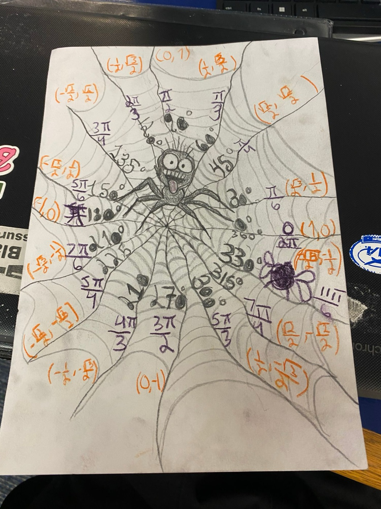

A spider web unit circle: every strand is an angle, every corner is a point.
Trigonometry · Unit 2 Project: Unit Circle Art
Original drawing. Degrees are in pencil, radians in purple, and coordinates (cos θ, sin θ) in orange. Each web strand from the spider out to the edge is one of the 16 key angles.
A spider web already looks like a unit circle. The strands come out of one center point, just like angles start at the origin, and the rings of silk go around in circles.
The spider sits at the origin (0, 0). Every strand is a terminal side of an angle, and where it meets the outside of the web is a point (cos θ, sin θ) on the circle.
The bug caught near 330° is a reminder that the spider is always "hunting" for the right coordinates.
Pencil = degrees · Purple = radians · Orange = coordinates
Tap any point on the web to see its values.
All 16 key angles with degrees, radians, coordinates, and sine, cosine and tangent. Thicker lines separate the quadrants.
| Degrees | Radians | Coordinates (x, y) | sin θ = y | cos θ = x | tan θ = y/x |
|---|
The unit circle is a circle with a radius of 1 centered at the origin (0, 0). It connects angles to the trig functions: for any angle θ, the point where the angle's terminal side crosses the circle is (cos θ, sin θ). So the x-coordinate is the cosine, the y-coordinate is the sine, and the tangent is sine divided by cosine (y ÷ x).
A full circle is 360°, which equals 2π radians. To convert, multiply degrees by π/180. For example, 60° × π/180 = π/3.
30°, 45° and 60° in Quadrant I give every value on the circle. The values come from the 30-60-90 and 45-45-90 special right triangles.
Every other angle is a reflection of a Quadrant I angle. 150°, 210° and 330° all have the same values as 30°. Only the signs change.
x is negative on the left, y is negative on the bottom. That is why "All Students Take Calculus" tells you which functions are positive.
At 90° and 270°, x = 0. Since tan θ = y ÷ x, you would divide by zero, so tangent is undefined there.
With a hypotenuse of 1, sin = opposite/1 and cos = adjacent/1, so the sides of the triangle are the sine and cosine. That makes x² + y² = 1 for every point.
I chose a spider web because it is almost Halloween and because a web is built just like the unit circle: straight strands out from the center and rings around it. I drew the web first, then placed the 16 angles on the strands, and used three colors so the degrees, radians and coordinates would be easy to tell apart.
The hardest part was fitting everything on one sheet of paper and keeping the signs right in Quadrants III and IV. I made some mistakes there and had to fix them, which helped me notice that the numbers repeat in every quadrant and only the signs change.
When I checked my work against the rubric, I saw I had left out tangent and the summary. Instead of starting over, I taped the drawing onto a bigger poster so I had room for the full sin, cos and tan table and this write-up. If I did it again, I would plan the layout first and leave more space around the circle.